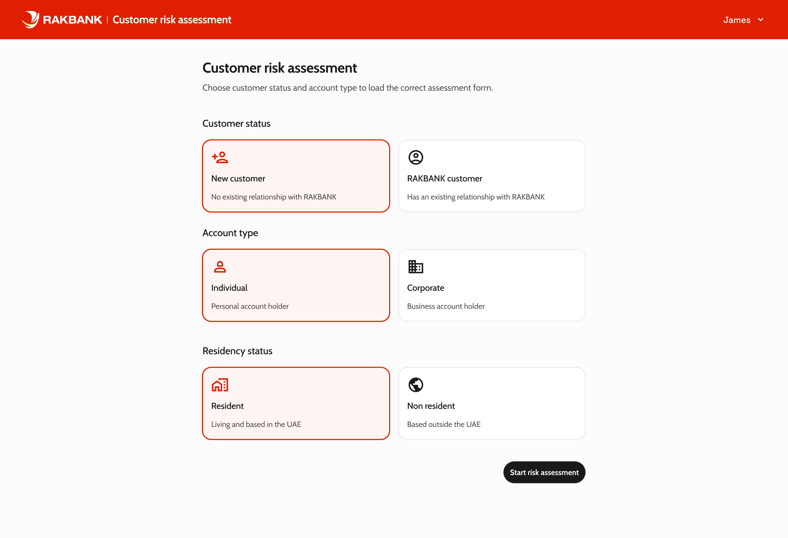

Rethinking the CRAM Risk Calculator
Turning a fragmented compliance tool into a digital interface with a full audit trail for RAKBANK's customer risk assessment workflow.
The Problem
RAKBANK's compliance team uses a tool called CRAM (Customer Risk Assessment Methodology) to calculate risk ratings for new and existing customers. The original interface was a fragmented set of Excel-based workflows, PDF forms, and disconnected data sources — no single screen showed the full picture. Staff had to manually cross-reference multiple systems, copy data between spreadsheets, and piece together a final risk score from scattered inputs.
The result? Slow assessments, inconsistent data entry, and weak audit trails. When regulators asked "how did you arrive at this rating?", the answer was buried in email chains, handwritten notes, and version-controlled Excel files. Every assessment was a potential compliance violation.
Staff success is measured by decision correctness, rule adherence, and audit defensibility — not speed. Every wrong answer is a potential regulatory violation. Every unexplained decision is future audit pain.
BEFORE
- Data scattered across multiple systems with no single source of truth
- No structured form — fields organised arbitrarily
- No clear separation between system data and manual input
- PDF reports showed raw data but no decision rationale
- No audit trail for overrides or manual changes
AFTER
- Single-page form organised by data source, matching staff workflows
- Neutral field handling preventing assessor bias
- Clear separation of system vs. human input for audit traceability
- Three-tier reporting: verdict → factor breakdown → evidence
- Full audit trail with timestamps and user attribution
Who Uses This
Three distinct user groups interact with CRAM, each with different mental models, responsibilities, and risk tolerances.
Compliance Officers
Primary assessors who complete risk evaluations. They need clarity, speed within accuracy constraints, and defensible outputs.
Risk Managers
Reviewers who approve or challenge assessments. They need transparency into how scores were derived and override history.
Auditors
Internal and external reviewers who examine past decisions. They need complete, timestamped records of every input and change.
"I need to know exactly why this customer got this score — not just the number, but every factor that contributed to it."
How I Approached It
A structured discovery-to-delivery process focused on understanding the compliance workflow before touching any UI.
Stakeholder interviews
Deep conversations with compliance officers, risk managers, and auditors.
Workflow mapping
Mapped the full assessment workflow across tools, systems, and handoffs.
Compliance audit
Reviewed regulatory requirements and internal policies driving the assessment.
Concept design
Early sketches translating the workflow into a unified digital form.
Prototype testing
Iterative testing with compliance officers to validate the form structure.
Delivery
Phased rollout with parallel running against the legacy process.
Design Principles
Four principles guided every design decision, derived from compliance requirements and user research.
Audit-first design
Every interaction is designed to produce a defensible record. No action without attribution.
Neutral presentation
Fields are presented without visual bias toward any particular answer. The system informs; the assessor decides.
Progressive disclosure
Complexity is revealed only when needed. Simple cases stay simple; complex cases surface additional context.
Error prevention over correction
Validation happens inline, before submission. The cost of a wrong submission in compliance is too high to rely on post-submission correction.
The Solution
A single-page digital form that mirrors the compliance workflow, with clear data provenance, structured override handling, and a three-tier audit report.
Risk Assessment Form
All assessment fields on a single page, organised by data source. System-populated fields are visually distinguished from manual inputs.
Score Breakdown
The risk score is accompanied by a factor breakdown showing each contributing element, its weight, and the data source.
Audit Report
A three-tier report: final verdict, factor-by-factor breakdown, and full evidence trail with timestamps and user attribution.

Impact
Measured outcomes from the redesigned CRAM tool.
What I Learned
Compliance UX is not about making things beautiful — it's about making correctness achievable and defensibility automatic.
The hardest design problem was not the form itself, but the override workflow. Getting the balance between flexibility and accountability right took three rounds of testing.
Working directly with compliance officers revealed that their biggest frustration was not the tool's complexity, but the lack of trust in its outputs. Building visible data provenance was the most impactful design decision.